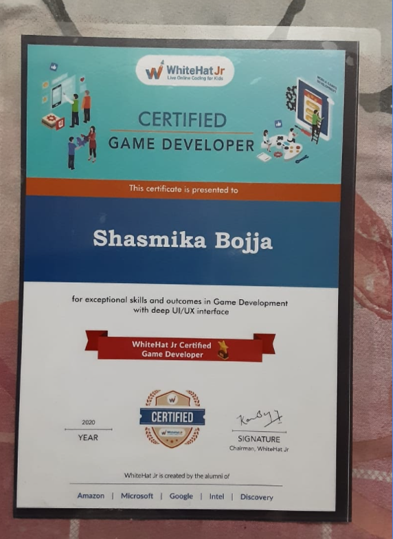
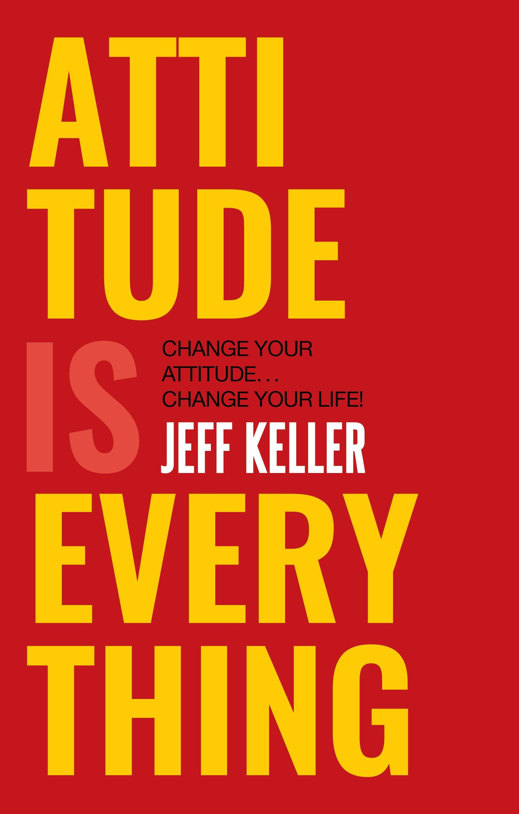
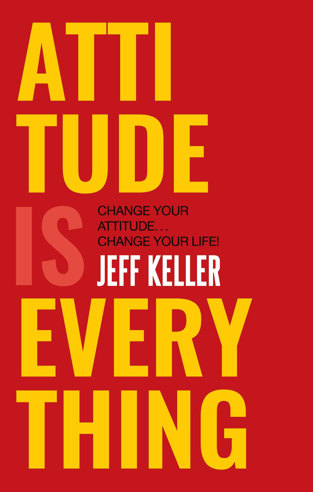

I Am
Shasmika Bojja
I am Learning how to Build Webpages
My Hobbies
Coding And Travelling
Travelling -
If you travel, you can experience things that you could never experience at home. You may see beautiful places and landscapes that do not exist where you live. You may meet people that will change your life, and your thingking. You may try activities that you have never tried before.Travelling gives the Peace and we'll always be calm and cool..I love to Travel. I went to so many places like: Jammu and Kashmir, Kerala, Tamil Nadu, Andhra Pradesh, Karnataka and Odisha. I am so Amazed I went to these all Places I am So Lucky because I experienced all types of houses...Like: Bamboo House, Wooden House, House Boat, Novotel, Beach Resort, Tent House.
Coding -
Coding, or computer programming, involves using computer languages to create programs and applications. For computer programmers, software engineers and other information technology professionals, coding is an essential skill. There are many different types of coding that an individual could learn as part of their job. I love Coding It gives a really very good Experience...I would like to build an App that will help us to donate things to poor people. The App will Donate things from the Rich People to Poor People.
Certificates from Coding

My Favourite Books

 
